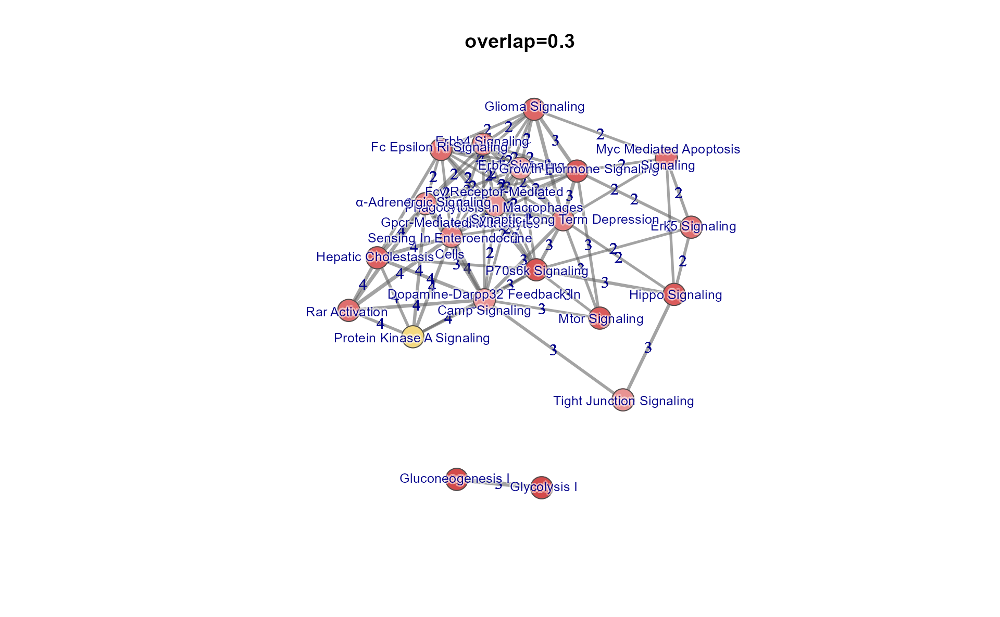
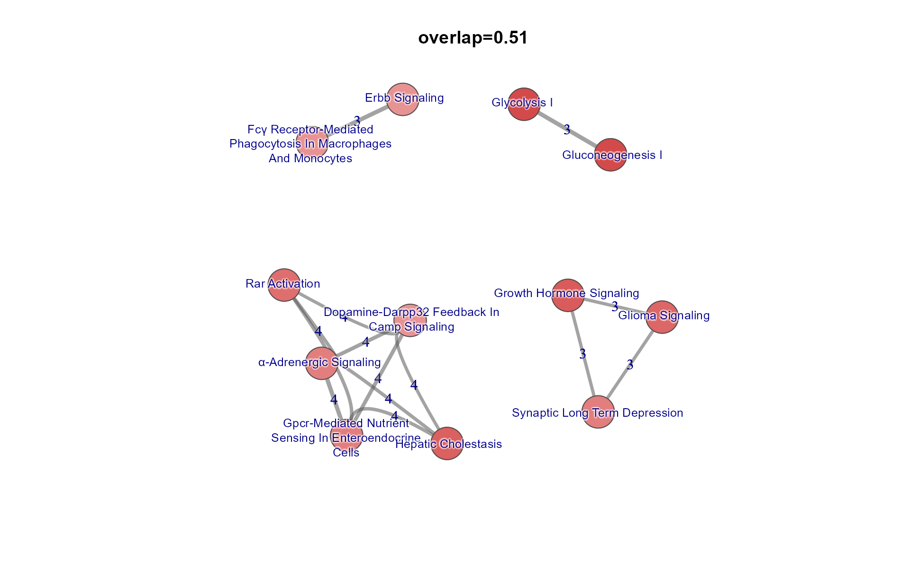
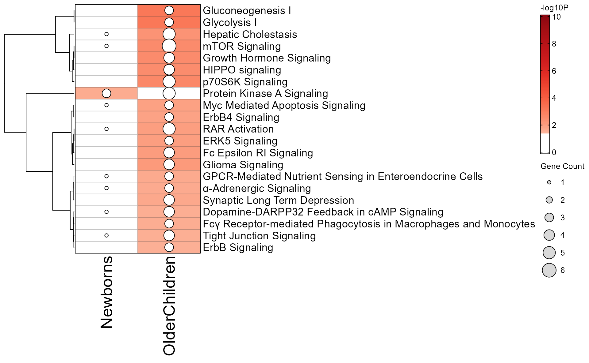
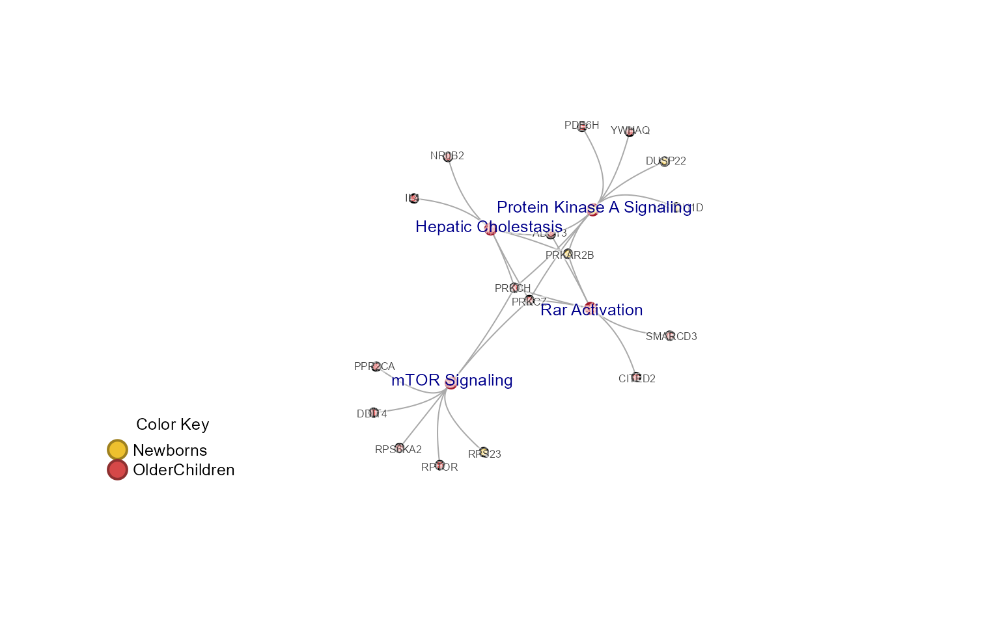

library(multienrichjam);
library(jamba);
library(colorjam);
suppressPackageStartupMessages(library(ComplexHeatmap));
options("stringsAsFactors"=FALSE, "warn"=-1);
knitr::opts_chunk$set(
fig.height=10,
fig.width=10,
fig.align="center"
)Import and use Ingenuity IPA enrichment data
This document describes steps recommended for using Ingenuity IPA enrichment data.
Ingenuity IPA enrichment data can be exported using a function "Export All" which by default creates one text file, concatenating each enrichment table into one large file.
This workflow demonstrates the import process using two IPA enrichment files used by Reese et al 2019 https://doi.org/10.1016/j.jaci.2018.11.043 to compare enrichment results in newborns to older children.
It therefore requires IPA enrichment results have already been exported in text format from IPA.
Import IPA data from text files
To import an IPA text file, use importIPAenrichment():
newborn_txt <- system.file("extdata",
"Newborns-IPA.txt",
package="multienrichjam");
newborn_dfl <- importIPAenrichment(newborn_txt);The result is a list of data.frame objects, where each data.frame represents one enrichment test. A convenient way to see the dimensions of each data.frame is with the function jamba::sdim():
sdim(newborn_dfl);
#> rows cols class
#> Canonical Pathways 113 7 data.frame
#> Upstream Regulators 117 6 data.frame
#> Diseases and Bio Functions 444 7 data.frame
#> Tox Functions 15 7 data.frame
#> Networks 8 7 data.frame
#> Tox Lists 19 6 data.frameFor MultiEnrichMap, we typically want to analyze multiple IPA enrichment files, so we can wrap the call in an lapply() function:
newborn_txt <- system.file("extdata",
"Newborns-IPA.txt",
package="multienrichjam");
olderchildren_txt <- system.file("extdata",
"OlderChildren-IPA.txt",
package="multienrichjam");
ipa_files <- c(Newborns=newborn_txt,
OlderChildren=olderchildren_txt)
ipa_l <- lapply(ipa_files, importIPAenrichment);Now we can check the dimensions within each list using jamba::ssdim():
ssdim(ipa_l);
#> $Newborns
#> rows cols class
#> Canonical Pathways 113 7 data.frame
#> Upstream Regulators 117 6 data.frame
#> Diseases and Bio Functions 444 7 data.frame
#> Tox Functions 15 7 data.frame
#> Networks 8 7 data.frame
#> Tox Lists 19 6 data.frame
#>
#> $OlderChildren
#> rows cols class
#> Canonical Pathways 237 7 data.frame
#> Upstream Regulators 338 7 data.frame
#> Diseases and Bio Functions 500 7 data.frame
#> Tox Functions 118 7 data.frame
#> Networks 10 7 data.frame
#> Tox Lists 36 6 data.frameIn most cases, each IPA file should contain the same enrichment tests, for example "Canonical Pathways", "Upstream Regulators", "Diseases and Bio Functions", etc. However, it is not always the case, so it is recommended to check and verify each IPA file contains at least the enrichment tests needed for downstream analysis.
Analyze IPA enrichments from one enrichment test
IPA performs multiple enrichment tests, which are done independently and with unique assumptions and caveats. Therefore, I recommend using one enrichment test at a time in MultiEnrichMap.
Extract one data.frame from each result:
## Take only the Ingenuity Canonical Pathways
enrichList_canonical <- lapply(ipa_l, function(i){
i[["Canonical Pathways"]];
});
sdim(enrichList_canonical);
#> rows cols class
#> Newborns 113 7 data.frame
#> OlderChildren 237 7 data.frame
## Convert data.frame to enrichResult
## multienrichjam::enrichDF2enrichResult
er_canonical <- lapply(enrichList_canonical, function(i){
enrichDF2enrichResult(i,
keyColname="Name",
pvalueColname="P-value",
geneColname="geneNames",
geneRatioColname="Ratio",
pvalueCutoff=1)
});
sdim(er_canonical);
#> rows cols class
#> Newborns 113 10 enrichResult
#> OlderChildren 237 10 enrichResult
print(head(as.data.frame(er_canonical[[1]])));
#> ID
#> 1 Role of Macrophages, Fibroblasts and Endothelial Cells in Rheumatoid Arthritis
#> 2 Neuroinflammation Signaling Pathway
#> 3 Sirtuin Signaling Pathway
#> 4 G-Protein Coupled Receptor Signaling
#> 5 Protein Ubiquitination Pathway
#> 6 Signaling by Rho Family GTPases
#> Ingenuity Canonical Pathways
#> 1 Role of Macrophages, Fibroblasts and Endothelial Cells in Rheumatoid Arthritis
#> 2 Neuroinflammation Signaling Pathway
#> 3 Sirtuin Signaling Pathway
#> 4 G-Protein Coupled Receptor Signaling
#> 5 Protein Ubiquitination Pathway
#> 6 Signaling by Rho Family GTPases
#> -log(p-value) zScore GeneRatio geneID pvalue p.adjust Count setSize
#> 1 0.405 NaN 0.00321 TNFSF13B 0.3935501 0.3935501 1 312
#> 2 0.406 NaN 0.00322 CASP8 0.3926449 0.3926449 1 311
#> 3 0.428 NaN 0.00344 HIST1H1D 0.3732502 0.3732502 1 291
#> 4 0.447 NaN 0.00362 PRKAR2B 0.3572728 0.3572728 1 276
#> 5 0.461 NaN 0.00377 TAP2 0.3459394 0.3459394 1 265
#> 6 0.478 NaN 0.00397 RDX 0.3326596 0.3326596 1 252run multiEnrichMap()
Now given a list of data.frame results, we can run multiEnrichMap():
mem_canonical <- multiEnrichMap(er_canonical,
enrichBaseline=1,
cutoffRowMinP=0.05,
colorV=c("purple", "orange"),
topEnrichN=20)The output mem_canonical is a list containing various results.
sdim(mem_canonical);
#> rows cols class
#> enrichLabels 2 character
#> colorV 2 character
#> geneHitList 2 list
#> geneIM 35 2 matrix
#> geneIMcolors 35 2 matrix
#> enrichIMgeneCount 40 2 matrix
#> enrichList 2 list
#> enrichIM 30 2 matrix
#> enrichIMcolors 30 2 matrix
#> multiEnrichDF 30 12 data.frame
#> multiEnrichResult 30 13 enrichResult
#> memIM 34 30 matrix
#> multiEnrichMap 30 220 igraph
#> multiEnrichMap2 30 220 igraph
#> multiCnetPlot 64 110 igraph
#> multiCnetPlot1 64 110 igraph
#> multiCnetPlot1b 64 110 igraph
#> multiCnetPlot2 64 110 igraph
#> colnames 5 listPlot the MultiEnrichMap network
For example, we can view the “Multi Enrichment Map” itself. This network connects pathways when they meet a Jaccard overlap coefficient threshold based upon the shared genes between the pathways. The cutoff is defined in multiEnrichMap() with argument overlapThreshold=0.1.
The mem_canonical object contains the igraph objects as "multiEnrichMap" for circular nodes, and "multiEnrichMap2" for coloredrectangle, or pie nodes. However, the helper function mem_multienrichplot() is used because it allows more customization, and prints a color legend by default.
g <- mem_multienrichplot(mem_canonical, repulse=3.5)
#> Registered S3 methods overwritten by 'huge':
#> method from
#> plot.sim BDgraph
#> print.sim BDgraph
You can custom filter the Jaccard overlap, or try the helper function mem_find_overlap() which does pretty well at guessing the best overlap threshold to use, by optimizing the cluster size and total nodes involved.
g <- mem_multienrichplot(mem_canonical,
overlap=mem_find_overlap(mem_canonical),
repulse=3.5)
Notice there are distinct subnetworks, called “components”, which are not connected to each other. A useful follow-up technique is to graph one component at a time, which we do using the helper function subset_igraph_components(). Components are ordered by size, largest to smallest, so you can keep the largest using argument keep=1, or the second largest with keep=2, and so on.
We also call two other helper functions:
-
removeIgraphBlanks()removes blank colors from multi-color nodes, such as pie nodes, or colored rectangle nodes. It helps show only the remaining colors without the whitespace. -
relayout_with_qfr()applies Fruchterman-Reingold layout to anigraphobject. It’s convenient to adjustrepulsehere, which is the recommended method for adjusting the spacing between nodes. This function also updates other useful attributes such as the node label angle, which makes labels appear offset away from the majority of edges. (It helps more with Cnet plots below.)
## You can alternatively pull out any other component
g_sub <- subset_igraph_components(g, keep=1);
## Re-apply network layout, and remove blank colors
g_sub <- relayout_with_qfr(repulse=3.5,
removeIgraphBlanks(g_sub))
## Plot
plot(g_sub, vertex.size=15)
Plot the enrichment P-value matrix
A useful overview of the enrichment results, including the overlaps across datasets, is shown in a heatmap of -log10(Pvalue). The helper function mem_enrichment_heatmap() is used here.
The argument p_cutoff is used to set the Pvalue below which cells are colorized – every P-value above this threshold is not colored, and displayed as white, even when the P-value is less than 1.
mem_enrichment_heatmap(mem_canonical, p_cutoff=0.05);
The argument color_by_column=TRUE will optionally apply a color gradient to each column, using the same P-value threshold defined by p_cutoff. In this case, cells are labeled to indicate the actual enrichment P-value.
mem_enrichment_heatmap(mem_canonical, color_by_column=TRUE);
Plot the pathway-gene incidence matrix
We can view the pathway-gene matrix using the function mem_gene_path_heatmap(). This function uses data in the mem object: "memIM" which contains the gene-pathway incidence matrix, "geneIM" which contains the gene-dataset incidence matrix, and "enrichIM" which contains the pathway-dataset matrix.
This function attempts to “guess” a reasonable number of column and row splits – which breaks the column and row dendrograms into separate sub-clusters. These breaks are visual only, but can be useful in follow-up analyses shown later. You can override these numbers with arguments column_split and row_split.
Also, the colors used across the top of the heatmap indicate the enrichment P-value, and are intentionally scaled so all P-values above the P-value threshold are not colored, and are therefore white.
This function uses the amazing ComplexHeatmap::Heatmap() function, which enables many awesome customizable features. The ... argument is passed to ComplexHeatmap::Heatmap(), so you can use those features as needed.
hm <- mem_gene_path_heatmap(mem_canonical);
hm;
As a follow-up analysis, you can pull out each pathway cluster from the heatmap itself, using heatmap_column_order():
hm_sets <- heatmap_column_order(hm);
hm_sets;
#> $A
#> [1] "Hepatic Cholestasis"
#> [2] "Dopamine-DARPP32 Feedback in cAMP Signaling"
#> [3] "α-Adrenergic Signaling"
#> [4] "GPCR-Mediated Nutrient Sensing in Enteroendocrine Cells"
#> [5] "RAR Activation"
#> [6] "eNOS Signaling"
#> [7] "Protein Kinase A Signaling"
#>
#> $B
#> [1] "Gluconeogenesis I" "Glycolysis I"
#>
#> $C
#> [1] "Fc Epsilon RI Signaling"
#> [2] "ErbB4 Signaling"
#> [3] "Fcγ Receptor-mediated Phagocytosis in Macrophages and Monocytes"
#> [4] "mTOR Signaling"
#> [5] "Synaptic Long Term Depression"
#> [6] "Glioma Signaling"
#> [7] "Growth Hormone Signaling"
#> [8] "HIPPO signaling"
#> [9] "p70S6K Signaling"
#> [10] "ERK5 Signaling"
#> [11] "Myc Mediated Apoptosis Signaling"
#> [12] "Leukocyte Extravasation Signaling"
#> [13] "NF-κB Signaling"Plot the Pathway-Gene Concept network (Cnet plot)
We can view the Cnet plot (concept network plot) which shows the pathway-gene relationship.
The helper function memIM2cnet() creates a Cnet plot from the mem_canonical output. Here, we also pipe the result through other helper functions:
-
fixSetLabels()applies pathway label word wrap -
relayout_with_qfr()applies network layout and adjusts node labels -
removeIgraphBlanks()removes blank colors from theigraphnodes
#cnet <- mem_canonical$multiCnetPlot1b;
cnet <- mem_canonical %>%
memIM2cnet() %>%
fixSetLabels() %>%
removeIgraphBlanks() %>%
relayout_with_qfr(repulse=4);
plot(cnet, vertex.label.cex=0.6);
mem_legend(mem_canonical);
You can extract the largest connected subnetwork to plot, as before.
g2 <- cnet;
g2_sub <- subset_igraph_components(cnet, keep=1)
plot(g2_sub);
Customizing the Cnet plot
The most useful customization is to subset the pathway nodes.
One useful method to choose a subset of pathways is to view one heatmap cluster at a time. Here we will use hm_sets made previously.
cnet_sub <- subsetCnetIgraph(cnet,
repulse=3.5,
includeSets=unlist(hm_sets[c("A")]));
jam_igraph(cnet_sub,
node_factor=2,
label_dist_factor=3,
label_factor=1.3);
mem_legend(mem_canonical);
Subset the Pathway-Gene Cnet plot
You can also subset the Pathway-Gene Cnet plot using specific names, or by some network criteria, using the function subsetCnetIgraph().
Pathways are subsetted to require at least 6 genes, using the argument minSetDegree, which can be useful to help simplify the graph structure.
Similarly, the minGeneDegree=2 argument can be used to display only genes present in 2 or more pathways, but for now we will not use that argument.
During the subset operation, some convenient default operations are also performed, controlled by function arguments:
- singlet nodes (with no connection to any other) are removed,
remove_singlets=TRUE - the layout is re-calculated,
force_relayout=TRUE - nodes are re-ordered by color,
do_reorder=TRUE - labels are re-positioned to have proper angle offset away from the edges entering each node,
spread_labels=TRUE - blank colors are not removed from pie and colored rectangle nodes,
remove_blanks=FALSE, but can be during this step byremove_blanks=TRUE.
cnet3 <- multienrichjam::subsetCnetIgraph(cnet,
repulse=5,
minSetDegree=6,
minGeneDegree=1);
plot(cnet3);
mem_legend(mem_canonical);
Custom igraph plot function jam_igraph()
The jam_igraph() function is a custom version of igraph::plot() intended to enhance the base function in a few ways:
- argument
rescale=FALSEwill keep the network layout aspect ratio 1:1, instead of scaling the coordinates to fit the size of the plot window. It also properly scales the node and edge sizes, unlike the baseigraph::plot()function. new arguments to help resize existing values:
-
label_factorre-scales thelabel.cexvalues by a multiplier -
node_factor,edge_factorre-scales thenode.sizeandedge.widthby a multiplier label_dist_factorre-scales thelabel.distvalues by a multiplier
The function below replicates the previous Cnet plot, with these changes:
-
node_factor=2makes the nodes 2x larger -
label_factor=1.2makes thelabel.cexvalues 1.2x larger -
label_dist_factor=3makes the label distance from the node center 3x larger, which emphasizes the label placement at an angle away from the edges of each node.
jam_igraph(cnet3, node_factor=2, label_factor=1.2, label_dist_factor=3);